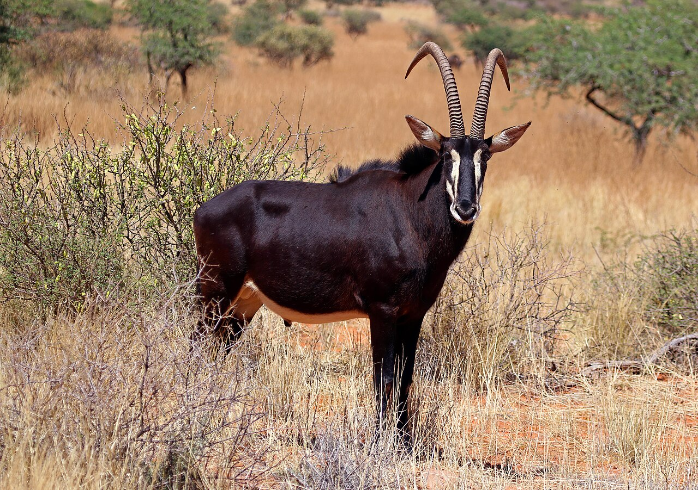

SFM Value Chain · Nature-based tourism · Botswana

Sustainable Eco-tourism
Botswana’s core theme — income from the living woodland and its wildlife

Sable antelope (Hippotragus niger), an emblem of the miombo — the wildlife that community-based tourism turns into a standing-forest income. Photo: Charles J. Sharp, CC BY-SA 4.0, via Wikimedia Commons
What it is
Botswana’s championed theme makes an intact woodland and its wildlife worth more standing than cleared. Community-based eco-tourism channels visitor income to the people who live with and look after the landscape, and is paired with neglected and underutilized species (Morama bean, Bambara, Kwengwe) for a diversified rural economy.
How it works
- Build community-based tourism around the woodland’s wildlife, birds and landscapes
- Return a share of visitor revenue to communities that conserve the habitat
- Combine tourism with veld products and NUS crops for a diversified, year-round income
- Manage visitor pressure and habitat so the asset — intact woodland — is protected
- Govern through community institutions so benefits and decisions stay local
Key facts
- Champion country
- Botswana
- Value chain
- Community-based eco-tourism; veld products
- Paired NUS
- Morama bean, Bambara, Kwengwe
- Co-benefits
- Habitat conservation · local revenue
- Region
- Northern Botswana woodlands & mopaneveld
Why it matters
The miombo–mopane holds some of Africa’s most important large-mammal populations (Frost, 1996). Where communities earn from keeping that wildlife and its habitat, an intact woodland becomes an economic asset — not land waiting to be cleared.
WOCAT classification
- Measures
- MManagement
- WOCAT group
- Protected / recreation-area management
- Degradation addressed
- Habitat lossLoss of biodiversity
Classified per the WOCAT SLM-Technologies classification.
✦Source and links
Sources (APA, 7th ed.).
- Frost, P. (1996). The ecology of miombo woodlands. In B. Campbell (Ed.), The miombo in transition: Woodlands and welfare in Africa (pp. 11–57). Center for International Forestry Research (CIFOR).
- Ryan, C. M., Pritchard, R., McNicol, I., Owen, M., Fisher, J. A., & Lehmann, C. (2016). Ecosystem services from southern African woodlands and their future under global change. Philosophical Transactions of the Royal Society B, 371(1703), 20150312. https://doi.org/10.1098/rstb.2015.0312